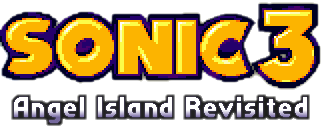

Back
v19.09.28.1 -- Hotfix
- Fixed reset of the Blue Sphere game progress
- Fixed a potential crash in the pause menu
- Fixed Super form palette glitches in outros
- Spindash reverb does not apply to the dropdash charge sound any more
- Support for modded sprites for the Time Attack ghosts
- v19.09.28.0 introduced a new graphics glitch in Data Select, this is fixed now
v19.09.26.0 -- SAGE 2019 build
- Added a new secret
- Reduced achievement requirements to unlock secrets
- Added "Max Control" Time Attack category for Sonic, which gets available when all his abilities are unlocked
- Added option for randomly generated special stages
- Included the latest music remaster tracks from DJ Spindash
- Minor overhaul for the menus
- Added dust cloud effect for drop dash
- Fixed an S3AIR specific bug in Tails AI that caused him to jump when he should spindash instead
- Fixed an original game bug where second player Tails got frozen on MHZ poles when offscreen
- Fix yet another audio bug: with fast level music as Super Theme, Super Cancel unintentionally restarted the music
- Fixed emulated version of data select music track being looped too early
- Fixed that for fast run animation not worked properly with classic 8-way rotation
- Fixed that in the Sonic 3 level layouts, some of the objects preventing Knuckles to use Sonic's path did not work as intended (in AIZ 1 and ICZ 1)
- Fixed a soft-lock in CNZ when AI Tails gets into a cannon while still carrying Sonic
- Fire shield now protects from freezers in ICZ
- Fixed broken animation for Super Peel-Out near vertical FBZ cylinders
- Fixed too early screen fade-out when Knuckles leaves SOZ 2 towards LRZ
- After Knuckles' end boss fight in SSZ, don't let Mecha Sonic explode unless all Chaos Emeralds got collected
- Fixed wrong positioning of Sonic after drop dash onto a SSZ spinning disc
- With Knuckles & Tails in SSZ via Act Select mode, Tails won't get left behind any more in the post-boss cutscene
- Fixed weird behavior when attaching to a DEZ hang carrier with charged drop dash
- Fixed a palette problem with DEZ 1 boss and anti-flicker setting set to maximum
- Fixed some Robotnik graphics glitches in DEZ 2 when playing with Knuckles
- Fixed a recently introduced bug that giant rings in S&K half could bring you to Chaos Emerald stages even though they got already completed
- Various minor sprite fixes for the special stage results screen
- Fixed a game freeze when opening the pause menu while it still fades out
- Fixed a crash when spamming Time Attack restart with W key
- Plus various more bug fixes
- Do not allow restarting when character has just died
- When resuming from the pause menu, ignore that button press for the game, i.e. don't automatically jump after pause
- Extended mod.json format with more metadata, see updated modding PDF and sample mods
- Added support for character palette mods, allowing for individual custom palettes of up to 30 colors
v19.08.17.0
- Added 6 new achievements
- Added a new unlockable secret
- Change to "Squirrels on a plane" achievement: the 5 animals from the boss are neither counted nor needed any more
- Slightly reduced achievement requirements for most unlockables
- Added a confirmation dialog before exiting the game from the pause menu
- Added restart options in pause menu for Normal Game & Act Select as well
- Added fast music playback where needed
- New option to use fast level music instead of Super theme
- Fix for level music playing in parallel to the extra life jingle after game pause
- Added extended camera option
- Added experimental fast forwarding of some cutscenes while key W or gamepad Y is held down
- Added option to smooth the flickering of some effects (like Hyper Sonic's colors)
- Added renderer selection during run-time, so switching to software renderer is easier now
- Added a Sonic CD inspired super fast running animation
- Added screen shake effect for Super/Hyper Sonic's Drop Dash
- Added option to repeat the Sonic 3 special stages if failed, instead of advancing to the next
- Added support for storing save data inside the installation itself; this is enabled if you create a folder "savedata" inside the game installation
- Super Emeralds can now be collected in the Sonic 3 half as well for completed save game slots, after you traded the Chaos Emeralds in for the gray Super Emeralds
- Fix for an original bug where one hidden monitor popping up made some others inaccessible
- Maintaining the drop dash charge after opening a shield monitor, to be more consistent with Sonic Mania in that regard
- Changed original S3&K game behavior that monitors could be opened by jumping at their side (it's more consistent with Sonic 1/2/CD/Mania and Sonic 3 alone now)
- When using randomized monitors of any kind, underwater shield monitors are either the bubble shield or replaced by ring monitor
- Fixed that Tails could carry Sonic underwater if controlled by an actual second player
- While carried by Tails, the main character now ignores certain objects to hang on to (incl. FBZ monkey bars, where this could easily cause a soft-lock in the previous version)
- Fix for corrupted lightning shield sparks after Super transform cancelled or ended
- Fix for speed shoes activated underwater
- Fixed various bugs with Super/Hyper forms vs. drowning
- Fix for wrong music after Super Cancel (e.g. in Big Arms boss fight)
- Now preferring boss fight music over Super theme
- Fix for too quiet music after 1-up jingle when using below 100% music volume
- Added smooth rotation on AIZ and MHZ vines
- Fixed graphical glitches in the first water tunnel of HCZ
- Fix for the CNZ "wheel glitch" occuring e.g. when you stand on a monitor below the first wheel in CNZ 1
- Fix for collision bug and potential death if spindashing into the passage way before CNZ 1 signpost
- Fix for character rolling above CNZ fans in rare cases
- Fix for random crushing near barrels in some places of CNZ
- Select Knuckles's start of CNZ and ICZ depending on where he left the previous zone
- Optional night time palette for ICZ 1 start
- Fix for Knuckles being able to climb up the walls at ICZ 1 start
- Fixed collision bugs in last loop of ICZ 2
- Fix for just popping out of a LBZ tube transporter when reaching the end point
- Sonic's Hyper Dash does not affect the LBZ wall triggers any more, to prevent the player from trapping himself
- Fix for continuous explosion sounds in background during LBZ 2 level results
- In MHZ 2 boss fight, switch to Robotnik's defeated face sprite when his capsules starts exploding alraedy
- Fix for a potential death when jumping on the first FBZ platform from high above
- Fix for second player stuck in air when the FBZ propeller pole they're attached to despawns
- Fix for Tails' animation when hit by the boulder in LRZ 2 Knuckles cutscene, when he's the main character
- Allow for jumping off the DEZ light tunnel launchers during the countdown
- After DEZ final bosses, Robotnik drops the Master Emerald only if the game ends there, but not when entering DDZ afterwards
- Fix for AI Tails not considering vertical level wrap when flying in
- Small sprite fix for balancing Super Sonic
- Fix for Hyper Sonic's stars effect sometimes getting drawn behind objects
- Fix for brief graphics glitches that can happen when Data Select fades in
- Added goal poles for Time Attack mode, inspired by the ones from Competition mode (Note: I had to slightly move some of the goals; in all cases to the left, so at least Time Attack runs are not slower than previous best times)
- If the "Reached limit for runtime steps..." error message occurs, it now automatically saves a game recording file for debugging
- Added support for character sprite replacement modding
- Reworked directory structure for mods, now allowing for multiple mods at the same time
- Added proper sample mods into the game installation
- Several behind-the-scenes optimizations and improvements
v19.05.18.0
- Added music options for fight against Knuckles and the cutscene afterwards in Hidden Palace Zone
- Added music options for the SSZ boss fights taken from Sonic 1 & 2
- Added "Infinite Time" option
- Added "Randomized Monitors" option
- Fix for general audio issues on some PCs
- Cut down RAM consumption by music tracks, preventing potential crashes after long play time
- Proper error handling when modded music file could not get found or loaded
- Fixed that some sound test tracks kept playing when leaving the options menu
- Fixed that Hyper Tails could still drown, unlike the other Hyper forms
- Fix for a recently introduced bug that drowning music did not stop when reaching air
- Fix for broken music switch when canceling super form during a boss encounter
- Fix for shading of distant objects in special stages (they were too dark) when using the software renderer
- Fixed various objects unintentionally interacting with debug mode
- Slightly changed AI Tails' reaction times to more closely resemble the original game
- Let characters switch to their falling animation in some places where the floor or bridge below collapses
- Fixed a really weird collision bug during AIZ fire transition that allowed you to glitch through the floor when doing a frame-perfect jump
- Fix for "frame eating" glitch with character dying at the start of MGZ 2 boss that can happen if using Hyper Sonic
- Made sure that Knuckles' MGZ 2 boss flees before the level results start, so you don't get to see broken graphics
- The CNZ fans now stop your fall after you got hit
- Increased the acceleration of CNZ barrels by holding up/down just a little bit
- In CNZ 2 pre-boss cutscene, the tube colors now change to blue when Knuckles presses the button
- Don't allow Knuckles to fly over the CNZ 2 boss
- Fix for spindash handling on ICZ trampolines
- Made sure the rising water in Knuckles' part of LBZ 2 can always keep up, so you won't encounter a broken background because of missing water
- Fixed that MHZ curly vine could detach you from a parachute mushroom
- Allow Sonic to free himself from the MHZ sticky vines using drop dash
- Fixed black sky if you're really fast at the end of FBZ 2
- Fix for spindash handling in SOZ quicksand (if a moving pillar pushed you in during spindash)
- Fix for an door opening sound in LRZ 1 caused by an offscreen wall door
- Fix for missing Death Egg in background at the end of LRZ 2
- Fixed a soft-lock in HPZ when Tails was left behind and Sonic & Knuckles waited forever at the transporter
- Fixed SSZ teleporters not reacting in Time Attack unless screen was in the right position
- Fixed some collision glitches
- Certain exploitable glitch fixes can now be undone via the settings.json entry "GAMEPLAY_TWEAK_FIX_GLITCHES" (has no effect in Time Attack, so this one stays as glitchless as possible)
- Fixed a small bug in Act Select and Time Attack menus, and using "Single Act" text instead of "Act 1" for HPZ and SSZ
- Debug game recordings now use current date and time as part of their file name
- Debug game recording can be enforced in fail-safe mode via the config.json
v19.04.23.0
- Added borderless window fullscreen mode (and it's the default when pressing Esc or Alt+Return)
- Replaced "Free Roam" name with "Act Select"
- Added "Infinite Lives" option for newbies
- Right Alt key support
- Disabled game's custom PrintScreen functionality, as it crashed the game for some players
- Fixed a slight misplacement of the scanlines effect
- The back button (S on keyboard, B on Xbox controller) now takes you from Data Select to Main Menu, and from Main Menu to Title Screen
- Small fixes for Time Attack restart and results screen
- No music restart any more when entering Normal Game mode
- Fixed a rare but severe bug causing a VDP error message box and complete screen corruption
- Fixed a rare bug that corrupts object spawning, leading to objects being spawned twice or missing
- Fixed Cutscene Knuckles' palette
- Fixed Knuckles continue icon colors after S&K special stages
- Fixed for free character movement in level results after being carried by Tails, which could lead to soft-locks
- Fixed position of characters when rolling when level results start
- Fix for entering a bonus stage when doing a Hyper Dash while stars over starpost are on screen
- Fix for soft-lock when transforming right when touching the ground
- Fix for Tails being teleported when Hyper Knuckles hits a wall
- Fix for giant rings sometimes despawning and not coming back (most notably with AIZ giant ring after fire transition)
- AIZ Swing Vines are slightly easier to grab
- Fixed left movement limit for AIZ 2 after returning from a special stage
- Small level extension in AIZ 2
- Minor improvement for AI Tails' behavior in AIZ 2 post-boss cutscene
- Added a few rings at the start of HCZ 1, so new players won't lose a life right away when landing on the blow fish badniks or spikes
- Fix for Tails staying behind in HCZ 1 when playing as Knuckles & Tails
- Fixed Sonic getting stuck when Tails carries him above a fan in HCZ
- Fixed potential soft-lock at the end of HCZ 1
- Fixed / reduced dead stops in HCZ 1 and MGZ 1
- Fixed CNZ 1 boss not lowering its height when a full row of block is destroyed
- Fixed broken state when Tails carries Sonic into a cannon in CNZ (including softlock when this happens in the cutscene after CNZ 2 boss)
- Fixed CNZ 2 weird kill by collision above a barrel in the lights-out section (from Framerater's review video)
- Prevent insta-shield and drop dash while snowboarding
- Fixed a bug allowing Knuckles to skip the ICZ 1 boss
- Reduced wait time at start of Knuckles cutscene in MHZ 1
- Fixed that MHZ catapult mushrooms did not reach full height
- Fixed for occasionally missing parts of the terrain before MHZ 2 boss
- Fixed a small palette glitch after Knuckles' LBZ 1 boss
- Fixed rendering issue in FBZ 1 (after the propellers)
- Fixed FBZ monkey bars vs. Tails carrying
- FBZ 2 boss escapes faster now so he's definitely offscreen when level results start
- Fix for player not always getting caught in first SOZ sand flow
- Fixed Sonic getting stuck when Tails carries him into a sand flow or the quicksand
- Fix for 2nd player Tails getting stuck in mid-air on a SSZ moving bar
- Fixed orientation of characters during jump from collapsing SSZ to the Death Egg
- Fixed DEZ gravity transporter character placement (gliding in with Knuckles)
- Fixed Tails' tails being visible twice in DEZ gravity transporter
- Tails' flicky army of death does not attack DEZ 2 boss any more
- No Super Cancel in Doomsday any more
- A few small A.I.R. level layout changes
- Added a short camera delay for the drop dash, like in Mania
- Delay for looking up/down reduced
- Made sure the "Longplay" achievement get only be completed in Normal Game mode
- Improved JSON parser error message box
- Proper game controller connect/disconnect handling
- Using SDL2's game controller button mappings now where possible (this will hopefully lead to more gamepads being correctly mapped automatically)
- Added option to start the game in fullscreen already
- Updated SDL2 library to most recent release